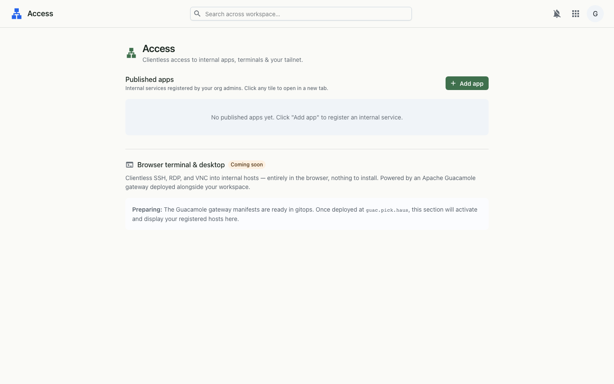

Clientless access to internal apps, terminals and your tailnet — a launchpad for the self-hosted services that live behind your workspace.
Access is where org admins publish internal and self-hosted services so every member can reach them from one screen — no client, no VPN dance, just a click. It also surfaces your Tailscale tailnet status and previews a browser-based terminal & desktop gateway that's on the way.

Access reads the org's published-app list and your admin status, and best-effort fetches Tailscale status to show the tailnet panel. App tiles are simple links; the browser terminal & desktop will proxy through a Guacamole gateway prepared in gitops and exposed on the tailnet.